| Course / Assignment | Assignment No. 1, Fall 2026 |
| Document version | 1.0 |
| Product version covered | Restaurant App MVP 1.0.0 (Expo SDK 57, React Native 0.86) |
| Prepared by | Student Name / Roll No. |
| Date | 28 September 2026 |
| Repository | github.com/Waqasjan76/Restaurant-App- |
The requirements in this document come from a "client meeting" held with myself as a potential customer, followed by a short role-play as the restaurant manager. The answers below are the source of the customer user stories in Section 2.2 (marked [I-n]).
Q1. When do you usually get frustrated at a restaurant?
At lunch time I only have about 45 minutes. I lose ten of them waiting for a menu and another ten waiting for the waiter to take my order. [I-1] I want to see the menu and prices before I arrive.
Q2. What would you check first when you open the app?
Today's specials and whether a dish is actually available. It is annoying to choose something and then hear "sorry, it's finished". [I-2]
Q3. How do you look for food?
I usually know what I want ("biryani", "chicken"), so I would type it. If I don't know, I browse by starters, mains, desserts and drinks, and sometimes sort by price when I am on a budget. [I-3]
Q4. What about ordering?
I want to add dishes to a cart, change quantities, and write notes like "no onions". I would also use a promo code if the restaurant offers one. [I-4] Before I confirm, I need the full bill with tax and service charge. I don't like surprises at the counter. [I-5]
Q5. Dine-in or takeaway?
Both. Sometimes I sit at a table, sometimes I pick up on the way home, so I need to choose a table or a pickup time. [I-6]
Q6. After you order?
I want to see whether my food is being prepared or is ready, with a timer, so I am not staring at the kitchen door. [I-7]
Q7. And for weekends with family?
I would book a table for 7:00 PM for a specific number of people and see immediately which times are full. I also need to be able to cancel if plans change. [I-8]
Q8. Anything else that would make you keep the app?
Saving favourite dishes, a dark mode for night use, and a simple, fast sign up. [I-9]
Manager role-play: What would you need?
One screen where incoming orders appear instantly so I can move them through the kitchen. I also want to accept or decline table requests, and to change prices or mark a dish as sold out without calling a developer.
This SRS defines the functional and non-functional requirements of the Restaurant App MVP, a mobile application that lets diners browse a restaurant's menu, order food for dine-in or takeaway, reserve tables and track orders. It also lets a restaurant manager handle incoming orders, reservations and the menu. The document covers version 1.0 of the MVP, which is a frontend-only React Native (Expo) prototype. All data is mock data held in React state and persisted locally with AsyncStorage.
Intended audience: the course instructor and evaluators (to assess completeness), the developer (as the implementation contract), testers (every functional requirement is written to be testable) and a future backend team (who can use Section 5 as the starting point for an API and database design).
In scope for version 1.0:
Out of scope: real payments (the bill is settled at the counter), push notifications, any backend service, database or external API, real authentication (tokens, password hashing, password reset), multi-restaurant or multi-branch support, real-time sync between different devices, delivery and rider tracking, and third-party state management libraries (Redux, MobX, Zustand).
| Term | Definition in the context of this app |
|---|---|
| SRS | Software Requirements Specification: this document. |
| MVP | Minimum Viable Product: the smallest feature set that lets a diner order and book and a manager serve, used to validate the idea. |
| UML | Unified Modeling Language: the standard notation used for the diagrams in Section 6. |
| Hook | A React function (useState, useEffect, ...) that lets a function component use state and lifecycle features. |
| Custom Hook | A developer-written function whose name starts with use and which combines built-in hooks to reuse logic, e.g. useForm, useReservation. |
| Context | The React Context API, used to share global values (auth, theme, cart, orders) without prop drilling. |
| Provider | The component that supplies a context value to the part of the tree below it, e.g. <CartProvider>. |
| Reducer | A pure function (state, action) => newState used with useReducer, e.g. cartReducer. |
| Action / Dispatch | An object such as { type: 'ADD_ITEM', payload } describing a change, and the function that sends it to a reducer. |
| Mock Data | Hard-coded JavaScript data (users, menu, tables, reservations) standing in for a server response. |
| FlatList | React Native's virtualised list component. It only renders visible rows, which keeps long menus smooth. |
| AsyncStorage | A key-value storage module on the device, used here instead of a database. |
| Debounce | Delaying an action (search) until the input has stopped changing for a set time (400 ms). |
| Memoisation | Caching a computed value or function between renders (useMemo, useCallback, React.memo). |
| Expo | A toolchain for building and running React Native apps (Expo Go, emulator or web). |
| Dine-in / Takeaway | The two order types: eaten at a restaurant table, or collected at a chosen pickup time. |
| Role | Key Permissions & Goals |
|---|---|
| Guest (not logged in) | Can only see the Login/Signup screen. Can create a Customer or Manager account. Goal: get into the app quickly. |
| Customer (Diner) | Browse, search, sort and favourite menu items; manage a cart; apply promo codes; place Dine-in or Takeaway orders; track own orders and cancel them while Pending; reserve tables and cancel own reservations; view profile; switch theme; log out. Tabs: Menu, Cart, Orders, Reserve, Profile. Goal: order and book with no queues and no bill surprises. |
| Restaurant Manager | Everything a guest sees after login, plus the Dashboard tab (hidden from customers): view all orders and move them through Pending, Preparing, Ready, Served or Cancelled; accept or decline reservations; add menu items, edit prices and toggle availability (changes appear on the customer menu immediately); view today's sales and active-order statistics. Cannot place orders. Tabs: Dashboard, Menu, Profile. Goal: digitise the menu and run orders and bookings efficiently. |
| ID | Role | Story | Source |
|---|---|---|---|
| US-01 | Customer | As a customer, I want to browse the menu with prices before I arrive, so that I don't waste my short lunch break waiting for a menu. | I-1 |
| US-02 | Customer | As a customer, I want daily specials highlighted and sold-out dishes greyed out, so that I only choose food that is actually available. | I-2 |
| US-03 | Customer | As a customer, I want to search dishes by name and filter or sort by category and price, so that I find what I want in seconds. | I-3 |
| US-04 | Customer | As a customer, I want to add items to a cart, change quantities and write special instructions, so that my order is exactly right. | I-4 |
| US-05 | Customer | As a customer, I want to apply a promo code and see the full bill with tax and service charge before confirming, so that there are no surprises at the counter. | I-4, I-5 |
| US-06 | Customer | As a customer, I want to choose Dine-in with my table or Takeaway with a pickup time, so that the kitchen knows where my food goes. | I-6 |
| US-07 | Customer | As a customer, I want to track my order status with a timer, so that I know when my food is ready. | I-7 |
| US-08 | Customer | As a customer, I want to book a table for a given date, time and party size and see which slots are full, so that I don't turn up to a full restaurant. | I-8 |
| US-09 | Customer | As a customer, I want to cancel a reservation, so that my table is freed when plans change. | I-8 |
| US-10 | Customer | As a customer, I want to save favourite dishes and use dark mode, so that the app is comfortable to use every day. | I-9 |
| US-11 | Manager | As a restaurant manager, I want incoming orders to appear instantly with buttons to change their status, so that phone-in orders are replaced by a clear kitchen queue. | Manager |
| US-12 | Manager | As a restaurant manager, I want to accept or decline table reservations, so that I can control seating. | Manager |
| US-13 | Manager | As a restaurant manager, I want to add new dishes, edit prices and mark items unavailable, so that the digital menu always matches the kitchen. | Manager |
| US-14 | Manager | As a restaurant manager, I want a dashboard tab that customers cannot see, so that management functions stay private. | Manager |
Every requirement is testable in the running prototype. The last column shows where it is implemented.
| ID | Requirement | Implemented in |
|---|---|---|
| FR-01 | The system shall let the user switch between Login and Signup modes on one screen. | LoginScreen |
| FR-02 | The system shall reject an email that does not match a valid email format and show the error under the field. | validation.js |
| FR-03 | The system shall require a password of at least 8 characters containing at least one digit, and (on signup) a matching confirm password. | validation.js |
| FR-04 | The system shall clear a field's error message as soon as the user edits that field. | useForm |
| FR-05 | The system shall authenticate against the mock user list after a simulated 1 second delay, showing an ActivityIndicator and disabling the submit button meanwhile. | users.js, LoginScreen |
| FR-06 | The system shall open the Menu for a Customer and the Dashboard for a Manager after a successful login, and show an Alert with a clear message on failure. | LoginScreen, MainTabs |
| FR-07 | The system shall log the user out, reset the navigation stack to Login and prevent returning with the Back button. | ProfileScreen, navigationRef |
| ID | Requirement | Implemented in |
|---|---|---|
| FR-08 | The system shall load the menu through a simulated request lasting 1.5 seconds and show a loading indicator, and an error message with a Retry button if the request fails. | MenuScreen, menu.js |
| FR-09 | The system shall filter items by the selected category chip (All, Starters, Mains, Desserts, Drinks). | MenuScreen |
| FR-10 | The system shall show a "Daily Special" badge on special items, and show unavailable items greyed out with a disabled Add button. | MenuItemCard |
| FR-11 | The system shall refresh the menu on pull to refresh and show the number of visible items in the screen header. | MenuScreen |
| FR-12 | The system shall let the customer mark and unmark a dish as favourite with a heart icon. | MenuItemCard |
| ID | Requirement | Implemented in |
|---|---|---|
| FR-13 | The system shall filter dishes by name or description 400 ms after the user stops typing. | useDebounce |
| FR-14 | The system shall focus the search input when the search icon is tapped, and keep focus when the clear (✕) button empties it. | MenuScreen (useRef) |
| FR-15 | The system shall show the last five distinct searches as tappable suggestions when the input is focused and empty. | MenuScreen |
| FR-16 | The system shall sort the list by price low to high, price high to low, or name A to Z. | MenuScreen (useMemo) |
| FR-17 | The system shall show a "Back to top" button after the list is scrolled more than 300 px, and a friendly empty state when nothing matches. | MenuScreen |
| ID | Requirement | Implemented in |
|---|---|---|
| FR-18 | The system shall add a menu item to the cart from its card, increasing the quantity if it is already in the cart. | cartReducer |
| FR-19 | The system shall increment and decrement quantities, and remove an item when its quantity reaches zero or when Remove is tapped. | cartReducer, CartScreen |
| FR-20 | The system shall store a special-instructions note for each cart item. | cartReducer |
| FR-21 | The system shall accept the codes WELCOME10 (10%), STUDENT15 (15%) and FEAST20 (20%), and reject any other code with an error message. | promoCodes.js, CartScreen |
| FR-22 | The system shall show a live item-count badge on the Cart tab. | MainTabs |
| ID | Requirement | Implemented in |
|---|---|---|
| FR-23 | The system shall offer hourly time slots from 12:00 to 22:00 for the chosen date. | tables.js |
| FR-24 | The system shall disable a slot when no table with enough seats for the party is free at that time. | useReservation |
| FR-25 | The system shall reject a past date, a party size outside 1 to 12, a phone number not in the format 03XX-XXXXXXX, and a booking less than one hour ahead. | useReservation |
| FR-26 | The system shall show a confirmation modal summarising the booking before saving it with status Pending. | ReservationScreen |
| FR-27 | The system shall list the customer's reservations and cancel one after an Alert confirmation. | MyReservationsScreen |
| ID | Requirement | Implemented in |
|---|---|---|
| FR-28 | The system shall require a table for Dine-in orders and a pickup time for Takeaway orders before checkout. | CartScreen |
| FR-29 | The system shall calculate subtotal, promo discount, 5% service charge, 15% sales tax and grand total on the Order Summary screen. | pricing.js |
| FR-30 | The system shall create an order with id, items, total, type, status Pending and a timestamp when the customer taps Place order, then empty the cart. | OrdersContext |
| FR-31 | The system shall advance an order automatically from Pending to Preparing (10 s), Ready (20 s) and Served (30 s) while its tracking screen is open, unless a manager has changed it manually. | OrderTrackingScreen |
| FR-32 | The system shall show a step progress indicator and an elapsed-time counter that updates every second. | OrderTrackingScreen |
| FR-33 | The system shall let a customer cancel their own order while it is Pending. | OrderTrackingScreen |
| ID | Requirement | Implemented in |
|---|---|---|
| FR-34 | The system shall show the Dashboard tab only when the logged-in user's role is manager. | MainTabs |
| FR-35 | The system shall list all orders and offer only the legal next statuses as buttons (e.g. Pending → Preparing or Cancelled). | OrdersPanel, ordersReducer |
| FR-36 | The system shall let the manager accept or decline Pending reservations. | ReservationsPanel |
| FR-37 | The system shall let the manager add a menu item, edit its price and toggle its availability, with the change visible on the customer menu immediately. | MenuManagementPanel, MenuContext |
| FR-38 | The system shall persist orders, reservations, menu edits and accounts in AsyncStorage and restore them at start-up behind a loading screen. | usePersistedReducer |
| ID | Category | Requirement |
|---|---|---|
| NFR-01 | Usability | A first-time customer shall be able to go from login to a placed order in under 2 minutes without instructions. Primary actions are full-width buttons, errors appear inline next to the field in plain language, and every list has an empty state that says what to do next. |
| NFR-02 | Usability / Accessibility | Touch targets are at least 36 × 36 dp (with hitSlop on small icons), icon-only buttons have accessibility labels, and body text contrast targets WCAG AA in both themes. |
| NFR-03 | Performance: screen load | After the loading gate, every screen shall render within 300 ms on a mid-range Android device. The only deliberate delays are the simulated 1 s login and 1.5 s menu request. |
| NFR-04 | Performance: list scroll | The menu shall scroll at 60 fps. It uses FlatList virtualisation with a keyExtractor, React.memo on MenuItemCard and useCallback handlers, so toggling one favourite re-renders one card, not the whole list (measured: 19 renders before, 1 after). |
| NFR-05 | Performance: input | Search input shall stay responsive while typing. Filtering runs once per 400 ms pause (debounce), and derived lists are memoised with useMemo. |
| NFR-06 | Responsiveness | Layouts shall adapt from 320 dp phones to tablets and web. Flexbox layouts wrap chips and slots, forms and lists have a max width (480 to 720 dp) centred on wide screens, and safe-area insets are respected on notched devices. |
| NFR-07 | Theming | All colours come from one palette file through useTheme(). Toggling dark mode shall restyle every screen, the headers and the tab bar instantly, and the choice is remembered. |
| NFR-08 | Maintainability: structure | Source is organised under src/ into components, screens, context, reducers, hooks, data, navigation (plus theme and utils). Screens contain UI only; business rules live in reducers and custom hooks. |
| NFR-09 | Maintainability: reuse and tests | Reusable components (MenuItemCard, QuantityStepper, StatusBadge, dashboard panels) and hooks are shared across screens. Reducers are pure and covered by Jest unit tests (npm test, 19 tests). |
| NFR-10 | Data handling without a backend | Seed data lives in src/data/*.js. Runtime data is held in React state (Context + useReducer) and saved to AsyncStorage after every change. It is loaded once at start-up, and a loading screen blocks the UI until loading completes, so empty data is never flashed. Storage errors are caught and logged, and the app falls back to seed data. |
| NFR-11 | Reliability | Every timer and interval (menu request, debounce, order tracking) is cleared in an effect cleanup, so no state update happens after unmount. The order reducer rejects illegal status transitions. |
| NFR-12 | Portability / Constraints | The app shall run on Android, iOS (Expo Go) and web from one JavaScript codebase, with no backend, no external API and no state management library. |
| NFR-13 | Security (prototype level) | Passwords are never passed to UI state after login (toPublicUser). Because this is a mock, stored accounts are not encrypted, and a production version must replace this with a real authentication server. |
With no database, each data set below is a JavaScript module in src/data that seeds React state. Mutable sets are managed by a reducer and mirrored to AsyncStorage under the key shown.
| Data Set Name | Fields | Description |
|---|---|---|
| Users users.js · key @restaurant/accounts | id, fullName, email, password, role ('customer' | 'manager'), phone | Mock accounts for login. Signup appends to the list held in AuthContext. The logged-in user (without the password) is kept in AuthContext state. |
| Categories menu.js · CATEGORIES | name ('Starters' | 'Mains' | 'Desserts' | 'Drinks'), tile colour (from theme palette) | Drives the category chips and the coloured image tiles. |
| MenuItems menu.js · key @restaurant/menu | id, name, description, price (Rs.), category, image (emoji), isSpecial, isAvailable | 19 seed dishes across 4 categories. Held in MenuContext (menuReducer) so manager edits reach the customer menu immediately. |
| Tables tables.js | id, name, seats, area | 8 tables (2 to 12 seats) used for availability checks and Dine-in table selection. Also exports TIME_SLOTS 12:00 to 22:00. |
| Reservations reservations.js · key @restaurant/reservations | id, userId, customerName, phone, date (YYYY-MM-DD), time (HH:00), partySize, tableId, status ('Pending' | 'Accepted' | 'Declined' | 'Cancelled'), createdAt | Seeds are generated relative to today (tomorrow 19:00 fully booked) so a disabled slot is always visible. Managed by ReservationsContext. |
| Orders key @restaurant/orders | id, userId, customerName, items[{id, name, price, quantity, note, image}], totals{subtotal, discount, serviceCharge, salesTax, grandTotal}, total, type ('dine-in' | 'takeaway'), tableId, pickupTime, status, statusTimes{status: timestamp}, manualOverride, timestamp | Created at checkout by OrdersContext (ordersReducer). Starts empty. |
| PromoCodes promoCodes.js | code → discount percent | WELCOME10 = 10, STUDENT15 = 15, FEAST20 = 20. |
| Cart (state) CartContext, not persisted | items[{id, name, price, image, category, quantity, note}], promoCode, discountPercent | Managed by cartReducer. It is session-only on purpose: a cart is short-lived. |
The diagram sources (Mermaid) are in A1/UML/src and the exported PNGs are in A1/UML.
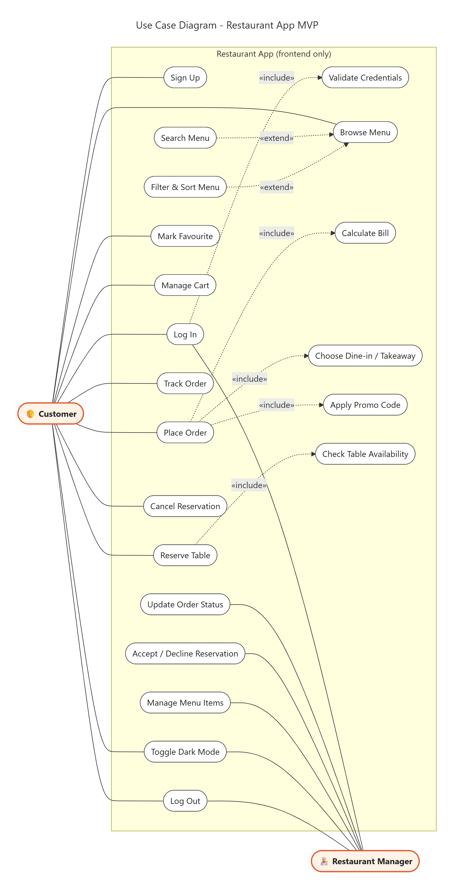
The use case diagram shows the two actors and the 21 use cases inside the app boundary. The Customer signs up, logs in, browses, manages the cart, places and tracks orders, and reserves or cancels tables. The Manager updates order statuses, reviews reservations and manages menu items. Log In, Toggle Dark Mode and Log Out are shared. Place Order «includes» Calculate Bill, Choose Dine-in / Takeaway and Apply Promo Code. Reserve Table includes Check Table Availability, and Log In includes Validate Credentials. Search Menu and Filter & Sort Menu «extend» Browse Menu because they are optional refinements of browsing.
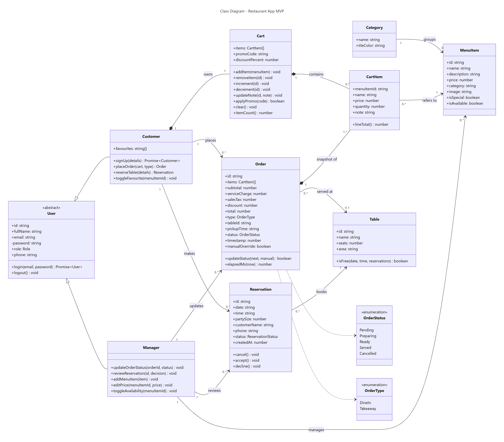
The class diagram models the domain behind the mock data. User is abstract and specialised by Customer and Manager (inheritance). A Customer owns exactly one Cart (composition), which contains 0..* CartItems, and each CartItem refers to exactly one MenuItem. A Category groups 0..* MenuItems. A Customer places 0..* Orders. Each Order keeps a snapshot of 1..* CartItems, may be served at 0..1 Table, and uses the OrderStatus and OrderType enumerations. A Customer makes 0..* Reservations, each booking exactly one Table. The Manager manages MenuItems, updates Orders and reviews Reservations. Attributes carry types and the key operations match the reducer actions.
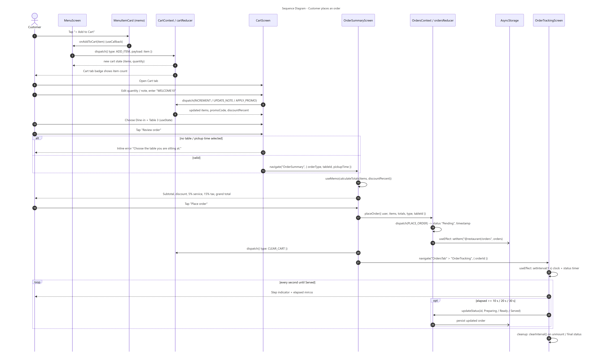
The sequence starts when the customer taps + Add to Cart. The memoised card calls the stable onAddToCart callback, MenuScreen dispatches ADD_ITEM, and the cart badge updates. In the Cart the customer edits quantities and notes, applies a promo code and picks Dine-in with a table. Choosing no table produces an inline error (the alt fragment). The Order Summary computes totals with useMemo. Place order calls placeOrder, which dispatches PLACE_ORDER with status Pending, persists it to AsyncStorage asynchronously, clears the cart and navigates to Order Tracking. There, intervals tick every second and advance the status at 10, 20 and 30 seconds (loop / opt). The intervals are cleared on unmount.
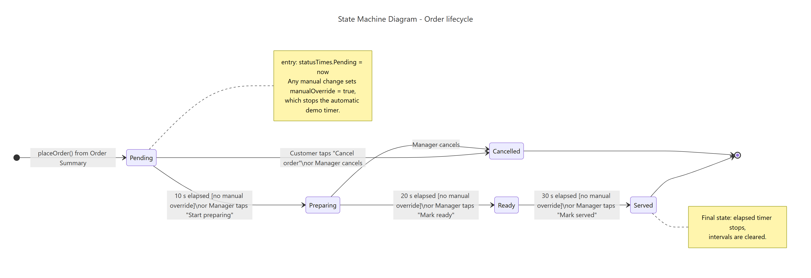
An order is created in Pending. The events 10 s elapsed or Manager taps "Start preparing" move it to Preparing, 20 s or "Mark ready" to Ready, and 30 s or "Mark served" to Served. Cancelled can be reached from Pending (by the customer or the manager) and from Preparing (by the manager only). Served and Cancelled are final. Timed transitions are guarded by [no manual override]: once a manager changes an order by hand, the demo timer stops. ordersReducer enforces this machine and ignores any other transition.
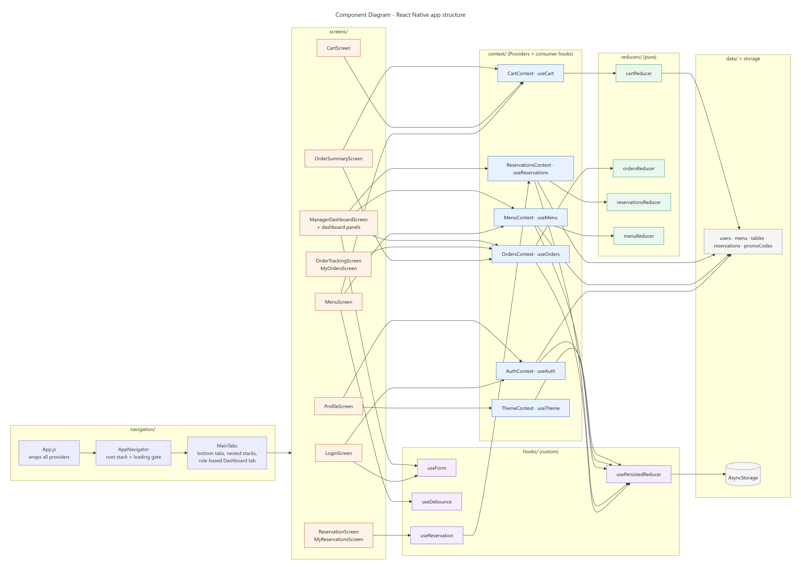
The component diagram shows the app's layers and their dependencies, read left to right. App.js wraps the tree in all providers. AppNavigator holds the root stack and the loading gate, and MainTabs holds the role-based tabs with nested stacks. Screens depend only on context consumer hooks (useCart, useOrders, ...) and on custom hooks (useForm, useDebounce, useReservation). Each provider delegates state changes to a pure reducer and persists through usePersistedReducer to AsyncStorage. Seed data comes from the data/ modules. No screen talks to storage directly.
Sections 7.1 to 7.8 correspond to Questions 3 to 10. The screenshots are from the running build (see A1/screenshots).
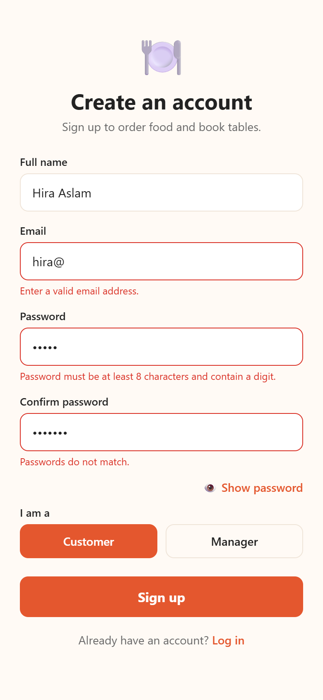
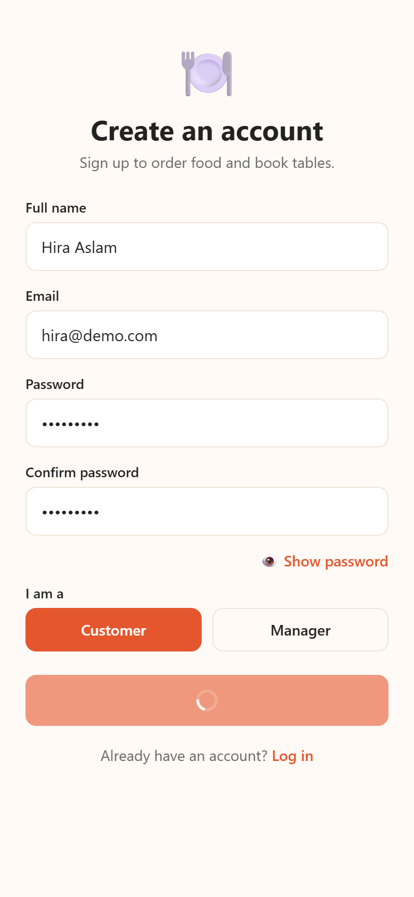
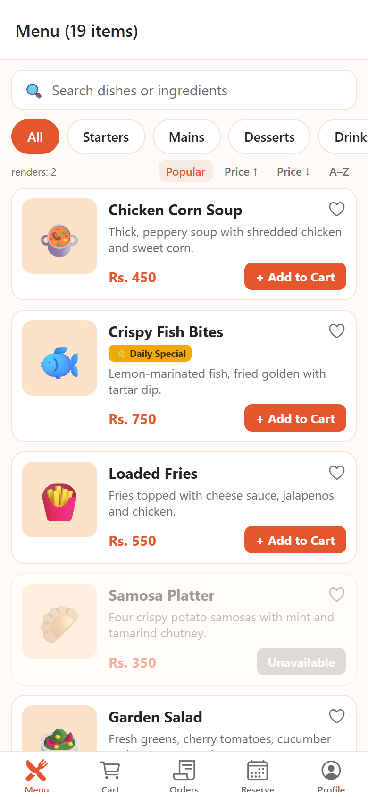
| Purpose | Authenticate existing users and register new Customers or Managers. |
| UI elements | Logo and title; Full name (signup only), Email, Password and Confirm password (signup only) inputs with inline errors; Show/Hide password toggle; Customer/Manager role selector (signup only); a submit button that shows an ActivityIndicator; a "Sign up / Log in" mode switch link. |
| Navigation | Entry: app start (initial route) or Log out. Exit: on success, navigation.reset to Main. Customers land on the Menu tab and managers on the Dashboard tab. |
| Local data | src/data/users.js (mock accounts, authenticate, registerUser with a 1 s setTimeout), and the accounts list from AuthContext. |
| Hooks & why | useState for mode, role and the show-password flag. useForm (custom, Q9) for controlled values, errors that clear on edit, validation and isSubmitting. useCallback keeps the mode-dependent validator stable. useAuth (useContext) stores the logged-in user globally. useTheme for colours. useMemo to build the themed styles. |
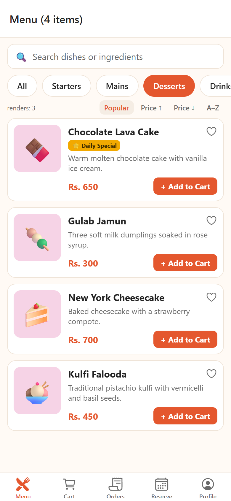
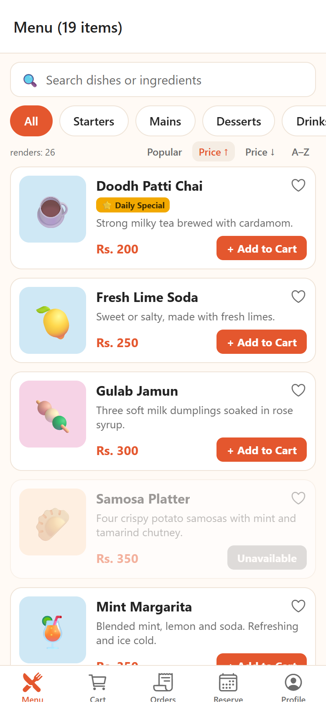
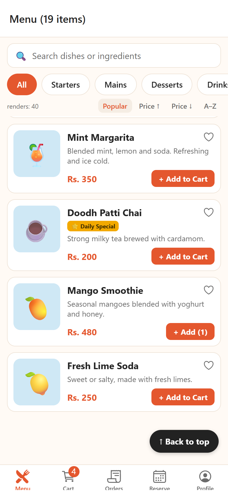
| Purpose | Show the restaurant's menu by category, with specials and availability, so the customer can add items to the cart. |
| UI elements | Loading spinner; error message with Retry; horizontal category chips; sort options; a FlatList of MenuItemCards (emoji image tile, name, "Daily Special" badge, description, price, heart, Add to Cart / Unavailable); pull to refresh; a header title with the item count. |
| Navigation | Entry: Menu tab (customer landing screen). Exit: the Cart tab badge leads to the Cart, and the other tabs. |
| Local data | src/data/menu.js (19 items, fetchMenu() Promise resolving after 1.5 s, 10% simulated failure), the live menu from MenuContext, and the cart quantities from CartContext. |
| Hooks & why | useState for menuItems, isLoading, error, refreshing, selectedCategory and favourites. useEffect with [] "fetches" on mount, and its cleanup clears the timer. A useEffect on [navigation, count] updates the header title. A useEffect on [menu] syncs manager edits. In Q4 a separate effect on [selectedCategory, menuItems] filtered the list; Q8 replaced it with useMemo. |
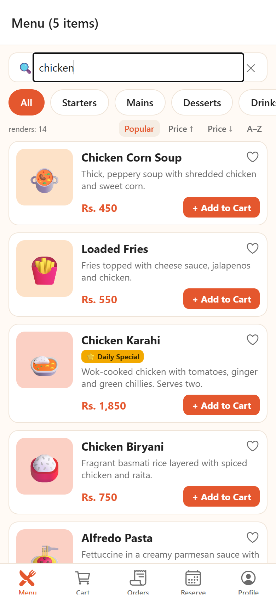
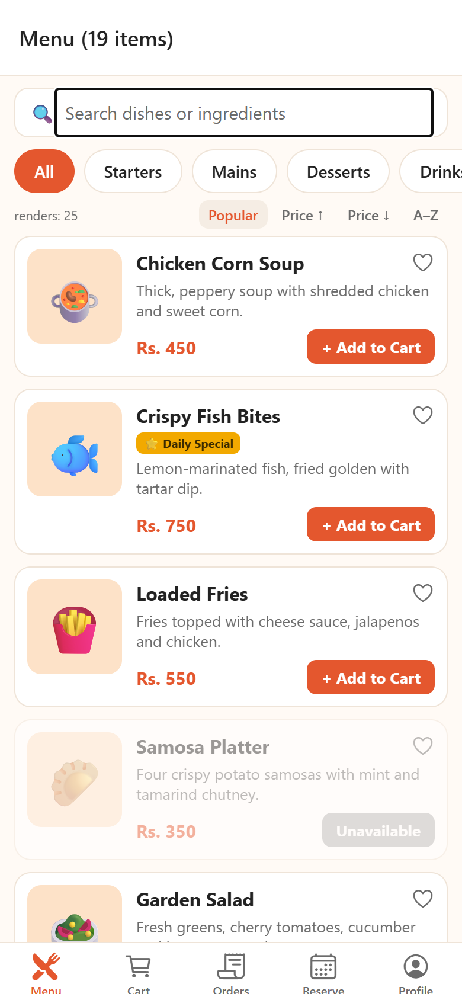
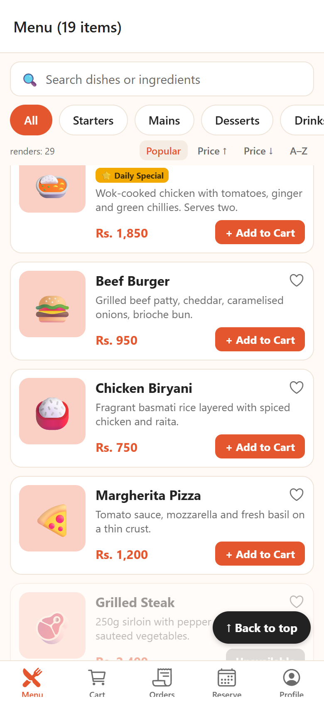
| Purpose | Find dishes quickly and move around long lists. |
| UI elements | A search bar with a 🔍 icon (focuses the input) and a ✕ clear button (clears and keeps focus); recent-search chips; a "renders: n" debug label; a floating "↑ Back to top" button; an empty state ("No dishes found"). |
| Navigation | Part of the Menu screen; no route change. |
| Local data | The loaded menu items and the last five search terms (in state). |
| Hooks & why | useRef for the TextInput (focus), the FlatList (scrollToOffset), the previous query (avoids duplicate consecutive recents) and the render counter. Mutating a ref does not re-render, unlike state. In Q5 the debounce timer id was also kept in a ref and cleared on every keystroke and on unmount; Q9 replaced this with useDebounce. useState holds the showBackToTop flag, set when the scroll offset exceeds 300 px. |
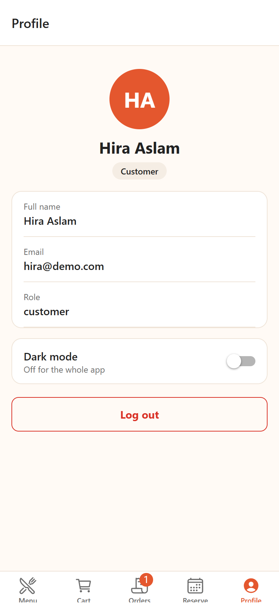
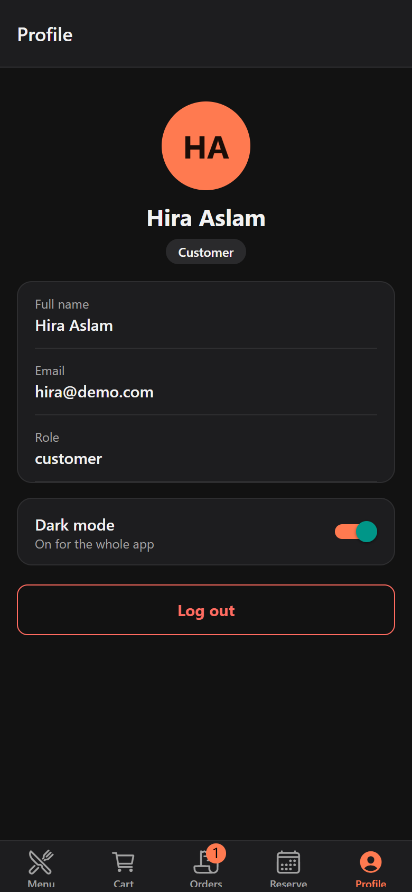
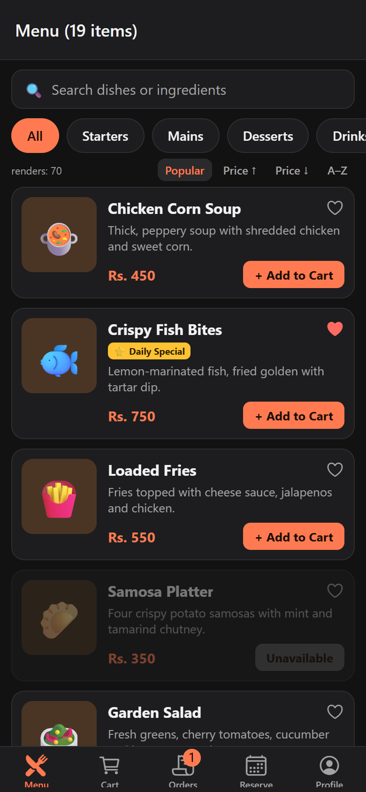
| Purpose | Show who is logged in, switch between light and dark mode for the whole app, and log out. |
| UI elements | An initials avatar, name, role badge, a details card (name, email, role, phone), a dark-mode Switch and a Log out button. |
| Navigation | Entry: Profile tab (both roles). Exit: Log out calls resetRoot('Login'), which resets the whole stack. |
| Local data | user from AuthContext; isDark from ThemeContext (persisted); palettes from src/theme/palette.js. |
| Hooks & why | useContext through useAuth / useTheme. Both throw a descriptive error outside their provider, which avoids prop drilling through the nested navigators. Every screen and the navigation theme read colours from useTheme. MainTabs reads user.role to show the Dashboard tab to managers only. |
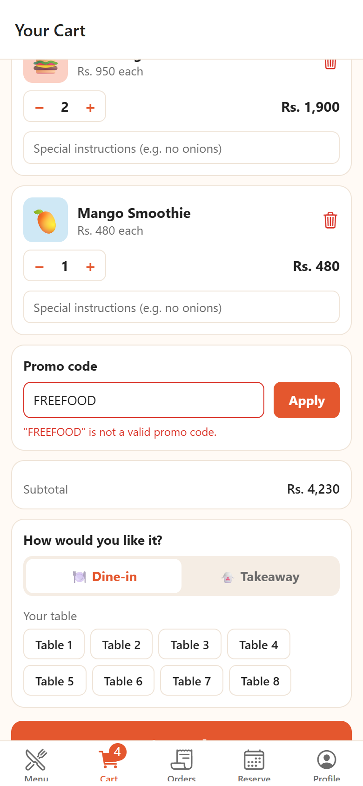
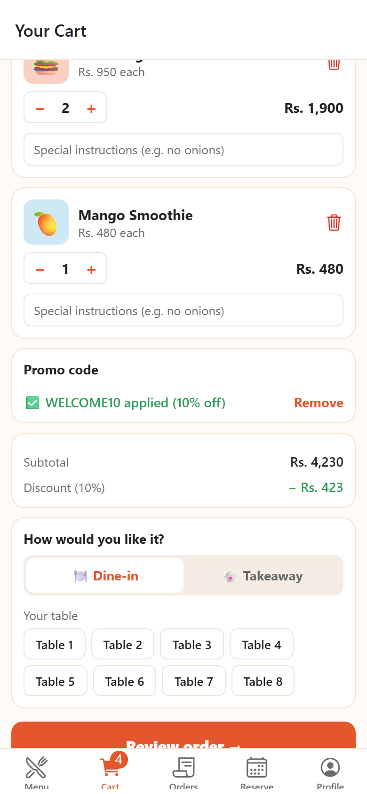
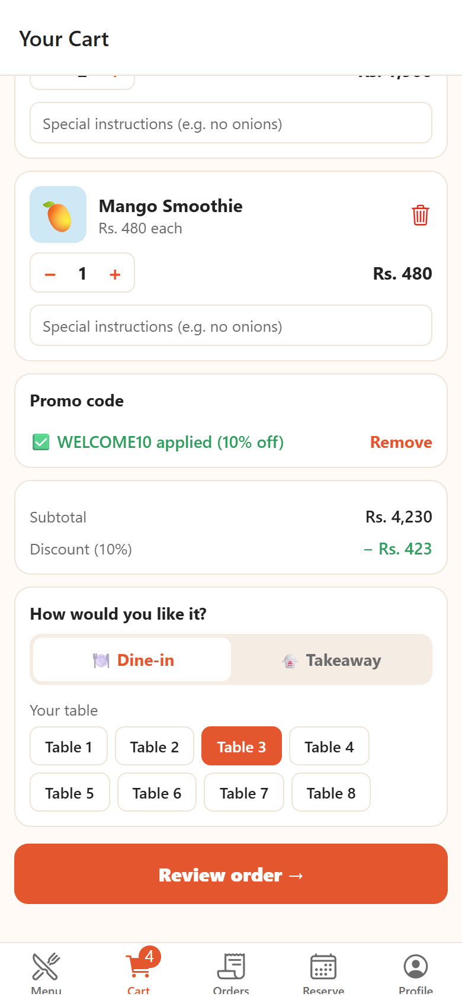
| Purpose | Review and edit the order, apply a promo code and choose Dine-in or Takeaway. |
| UI elements | Item rows with emoji tile, a quantity stepper (− n +), a remove (trash) button and a "Special instructions" input; Clear cart; a promo input with Apply/Remove and an error message; subtotal and discount; a Dine-in/Takeaway segmented control with table chips or pickup-time chips; a "Review order →" button; an empty-cart state. |
| Navigation | Entry: Cart tab (badge shows the item count). Exit: "Review order" goes to OrderSummary with params { orderType, tableId, pickupTime }; "Browse menu" (when empty) goes to the Menu tab. |
| Local data | CartContext state; promoCodes.js; tables.js for dine-in tables. |
| Hooks & why | useReducer (inside CartProvider) with the pure cartReducer: ADD_ITEM, REMOVE_ITEM, INCREMENT, DECREMENT, UPDATE_NOTE, CLEAR_CART, APPLY_PROMO and REMOVE_PROMO, exposed through useCart. useState for the promo input and error, and for orderType, tableId and pickupTime. useMemo for the pickup options. |
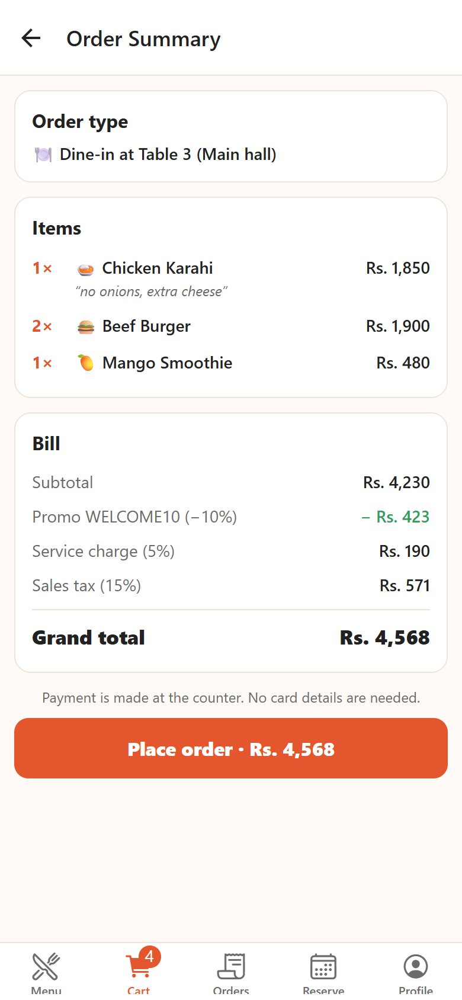
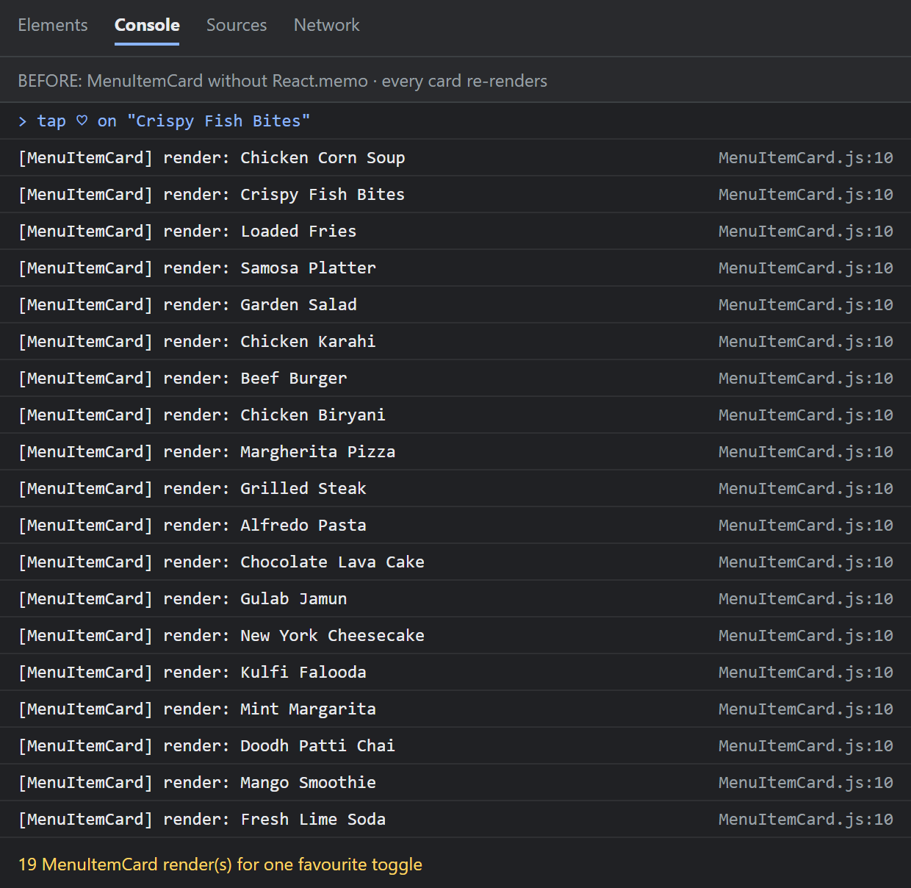
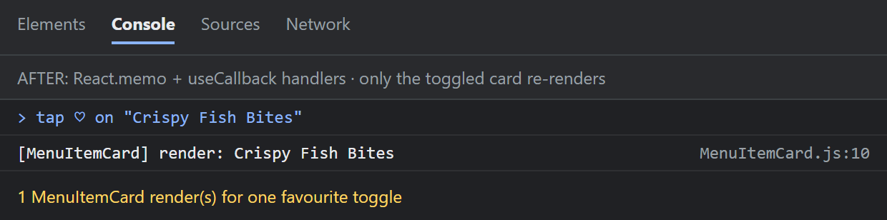
| Purpose | Show the final bill and place the order. |
| UI elements | An order-type card, an items list with notes, a bill (Subtotal, Promo discount, Service charge 5%, Sales tax 15%, Grand total), a payment note and a "Place order · Rs. total" button. |
| Navigation | Entry: from Cart ("Review order"). Exit: Place order pops the cart stack and opens Orders tab › OrderTracking. |
| Local data | CartContext items and discount; SERVICE_CHARGE_RATE and SALES_TAX_RATE constants in utils/pricing.js. |
| Hooks & why | useMemo computes totals only when items or discountPercent change. On the Menu, React.memo(MenuItemCard) with useCallback handlers (add to cart, toggle favourite) keeps prop references stable, so toggling a heart re-renders one card instead of 19 (see the console captures). A single useMemo now derives the visible list from category, search and sort, replacing Q4's state and effect. |
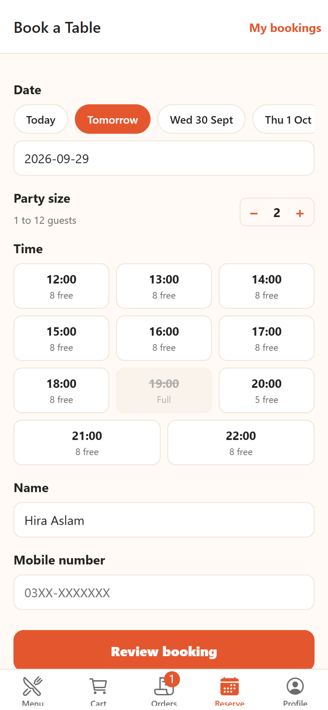
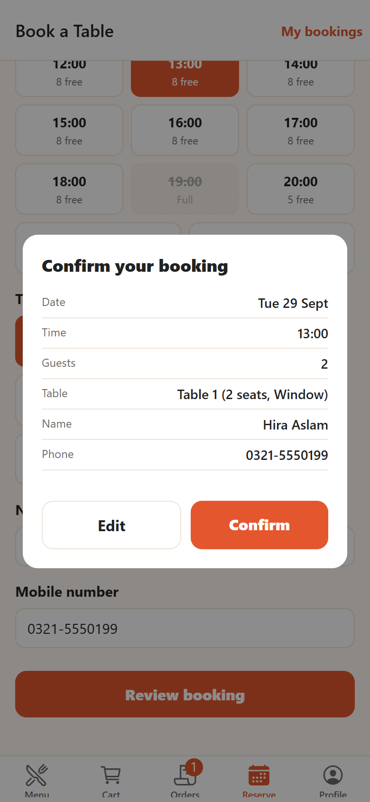
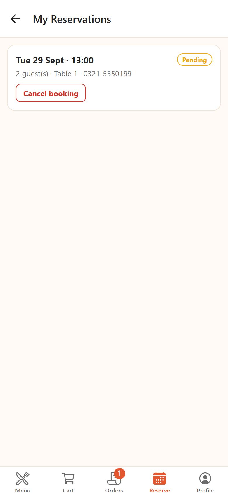
| Purpose | Book a table for a date, time and party size, and manage your bookings. |
| UI elements | Date chips (Today to +6 days) plus a YYYY-MM-DD input; a party-size stepper (1 to 12); an hourly slot grid (12:00 to 22:00) with "n free" or a struck-through "Full" disabled slot; available-table chips; name and 03XX-XXXXXXX phone inputs with inline errors; "Review booking"; a confirmation modal (Edit / Confirm); a "My bookings" header link leading to a list with status badges and "Cancel booking" (Alert confirmation). |
| Navigation | Entry: Reserve tab. Exit: Confirm or "My bookings" goes to MyReservations (Back returns). |
| Local data | mockTables, TIME_SLOTS, mockReservations (through ReservationsContext). |
| Hooks & why | useReservation (custom) holds all the logic: form state, availability (useMemo over reservations and tables), validation (past date, party size, phone regex, at least 1 h ahead), createReservation and cancelReservation. The screen only renders. useForm and useDebounce are the other custom hooks. All follow the rules of hooks: names start with "use", they are called at the top level and none returns JSX. |
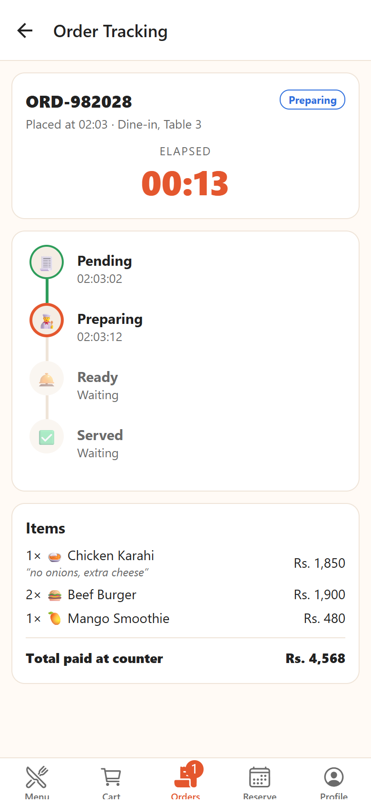
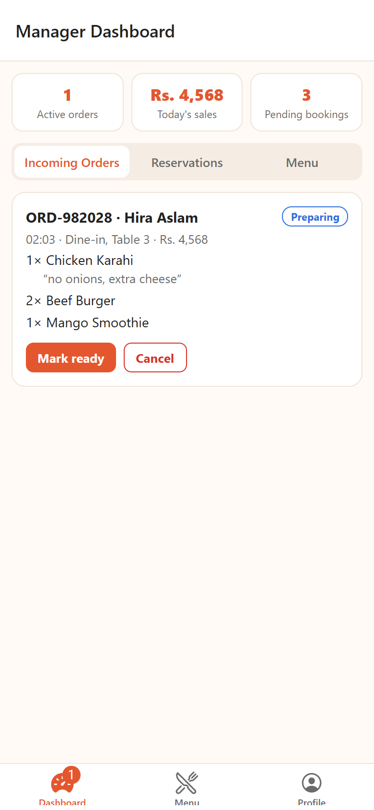
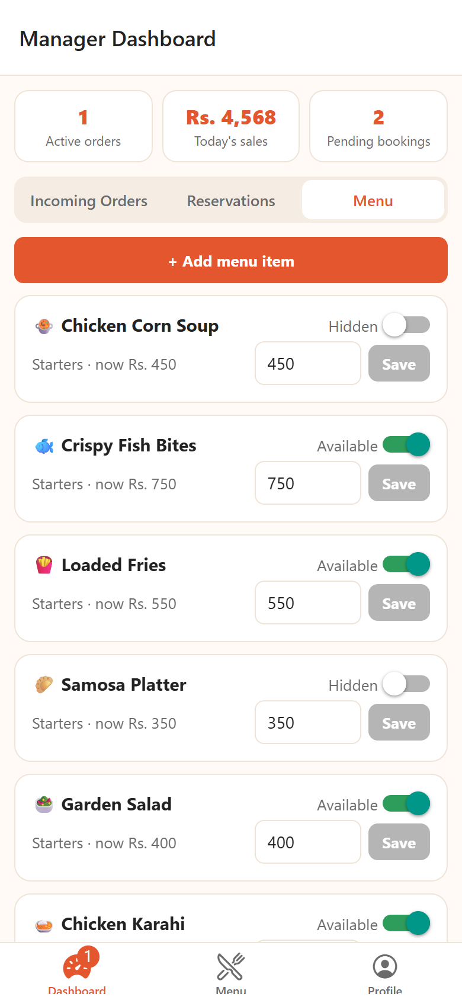
| Purpose | Let customers follow their order live, and give managers one place to run orders, bookings and the menu. |
| UI elements | Tracking: order id and status badge, placed time and type, a large mm:ss elapsed timer, a 4-step progress indicator (Pending, Preparing, Ready, Served) with timestamps, an items list, and a Cancel order button (Pending only). My Orders: a list with status and "Track →". Dashboard: stats (active orders, today's sales, pending bookings) and a segmented control: Incoming Orders (legal next-status buttons), Reservations (Accept/Decline) and Menu (add-item form, price edit + Save, availability Switch). |
| Navigation | Bottom tabs, each with a nested native stack. Customer: Menu, Cart (› OrderSummary), Orders (MyOrders › OrderTracking), Reserve (› MyReservations), Profile. Manager: Dashboard, Menu, Profile. Safe areas are handled by SafeAreaProvider, the headers and the tab bar. |
| Local data | OrdersContext, ReservationsContext and MenuContext, all persisted to AsyncStorage. |
| Hooks & why | useEffect + setInterval for the 1 s clock, and a second interval advances the status at 10, 20 and 30 s. Both are cleared in cleanup. useReducer in OrdersContext / MenuContext / ReservationsContext. usePersistedReducer (custom) loads from AsyncStorage in a mount effect and saves in an effect after each change. AppNavigator shows LoadingScreen until every store has loaded. useMemo for the dashboard stats. |
| Screen / module | useState | useEffect | useRef | useContext | useReducer | useMemo | useCallback | Custom hooks |
|---|---|---|---|---|---|---|---|---|
| LoginScreen | ✔ | ✔ | ✔ | ✔ | useForm | |||
| MenuScreen | ✔ | ✔ | ✔ | ✔ | ✔ | ✔ | useDebounce | |
| MenuItemCard (React.memo) | ✔ | ✔ | ||||||
| ProfileScreen | ✔ | ✔ | ||||||
| CartScreen | ✔ | ✔ | ✔ (CartProvider) | ✔ | ||||
| OrderSummaryScreen | ✔ | ✔ | ||||||
| ReservationScreen / MyReservations | ✔ | ✔ (layout) | ✔ | ✔ (ReservationsProvider) | ✔ | ✔ | useReservation | |
| OrderTrackingScreen | ✔ | ✔ (intervals) | ✔ | ✔ (OrdersProvider) | ✔ | |||
| ManagerDashboardScreen + panels | ✔ | ✔ | ✔ (Menu/Orders/Reservations) | ✔ | useForm | |||
| Providers | ✔ | ✔ (storage) | ✔ | ✔ | ✔ | usePersistedReducer |